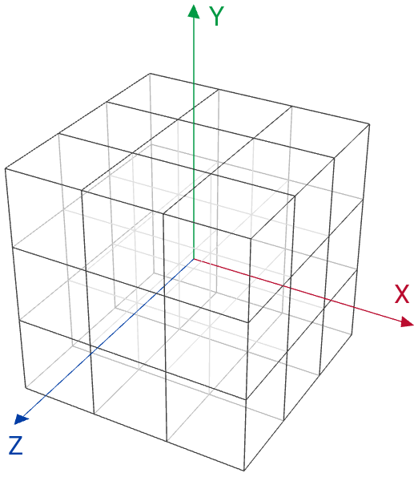

Introduzione
Con questo progetto ci si è posti l'obiettivo di realizzare un modello virtuale del famoso rompicapo "il Cubo di Rubik". Il risultato ottenuto può essere osservato alla pagina Application e all'occorrenza è possibile consultare una breve guida sull'utilizzo dell'applicazione alla pagina User Manual. In questa pagina invece verranno discussi alcuni aspetti tecnici e realizzativi legati al progetto.
L'applicazione consente all'utente di replicare le manipolazioni che comunemente vengono eseguite da un giocatore su un cubo reale. Tra tutti i movimenti possibili del cubo, i soli di interesse per la soluzione del rompicapo - ossia il raggiungimento di quella particolare configurazione in cui le sei facce del cubo sono tutte monocolori - appartengono alla famiglia delle rotazioni e si distinguono in due categorie: le rotazioni del cubo lungo gli assi del sistema di riferimento cartesiano tridimensionale con l'origine posta al centro del cubo e le rotazioni delle facce del cubo lungo le direzioni individuate dalle rispettive normali alle sei facce.
Il modello tridimensionale del cubo è stato realizzato sfruttando le possibilità offerte dalla libreria grafica WebGL, la quale consente di mescolare elementi tipici di una pagina web ad elementi tipici delle applicazioni con grafica in tempo reale. Da en.wikipedia.org/wiki/WebGL#Support: WebGL is widely supported in modern browsers, however its availability is dependent on other factors like the GPU supporting it. The official WebGL website offers a simple test page.
Nomenclatura
Prima di discutere gli aspetti teorici e tecnici che caratterizzano l'applicazione frutto di questo progetto, occorre soffermarsi brevemente sull'oggetto al centro dello studio ideato da Ernő Rubik e in particolare introdurre la nomenclatura utilizzata in questa e nelle altre sezioni del progetto per identificare le diverse parti di cui il cubo è composto.
La nomenclatura nel seguito adottata riprende, con qualche variazione, quella utilizzata da André Warusfel nel libro Il Cubo di Rubik (si consulti la bibliografia per maggiori dettagli). Il volume descrive alcuni aspetti fondamentali del cubo ed espone un algoritmo risolutivo che come spiegato in seguito non viene implementato dall'applicazione.
Il Cubo di Rubik è formato da ventisette cubi più piccoli (qui chiamati anche cubetti) che si differenziano in quattro tipologie (si veda anche la Figura 1):
- otto cubi vertice, posti agli otto angoli del cubo, ciascuno dei quali ha tre facce visibili ed altrettante nascoste
- dodici cubi spigolo, posti ognuno tra una coppia di cubi vertice, ciascuno dei quali ha due facce visibili e quattro nascoste
- sei cubi centrali, posti al centro delle facce del cubo, ciascuno dei quali ha una sola faccia visibile e le rimanenti nascoste
- un cubo "fantasma" (così detto poiché tale cubo non è presente nel cubo reale), posto al centro del cubo, che non presenta alcuna faccia visibile
| cubi vertice | cubi spigolo | cubi centrali |
| Figura 1: Le tre tipologie dei cubetti visibili. | ||
Le sei facce del cubo, indipendentemente dall'orientazione del cubo, possono essere identificate come illustrato nella Figura 2. I nomi delle facce verranno sovente abbreviati con la sola iniziale del nome, ad esempio si scriverà "R" per indicare la faccia a destra anziché "Right".
| Figura 2: Le sei facce del cubo. |
Ognuno dei ventisei cubetti visibili può essere identificato univocamente elencando le facce su cui esso compare. Ad esempio il cubo vertice che si trova nell'angolo di fronte, in alto, a destra appare sulle facce front, up, right e quindi può essere identificato dalla sigla FUR. Analogamente, il cubo spigolo che si trova dietro, a sinistra compare sulle facce back, left e quindi può essere identificato dalla sigla BL.
Rappresentazione
Come anticipato, supponendo di posizionare il cubo al centro del sistema di riferimento cartesiano tridimensionale con gli assi e i rispettivi versi orientati come illustrato nella Figura 3, è possibile raggiungere ogni configurazione permessa dal cubo reale tramite delle semplici rotazioni dell'intero cubo o delle sei facce lungo gli assi x, y, z del sistema di riferimento.
|  |
| Figura 3: Il sistema di riferimento cartesiano tridimensionale. |
Per capire in quale modo queste rotazioni sono applicate al modello virtuale del cubo occorre innanzitutto osservare più da vicino la struttura con la quale il modello viene descritto all'interno dell'applicazione e quali sono le principali fasi che intercorrono nel passaggio dalla rappresentazione del modello tramite questa essenziale struttura, a quella molto più complessa renderizzata dal browser.
La Figura 4 mostra, nell'ordine inverso rispetto a quello in cui viene comunemente eseguita, la pipeline di rendering processata dagli shaders definiti secondo le specifiche WebGL all'interno dell'applicazione. L'ordine delle operazioni nell'immagine può essere inteso anche come una regressione del modello dalla rappresentazione complessa visualizzata dall'utente tramite il browser, a quella minima di cui dispone/necessita l'applicazione per poter costruire il modello complesso visualizzato.
| texture model | ||||||
| vertex model | wireframe model | |||||
| Figura 4: La pipeline di rendering in ordine inverso. | ||||||
In questi termini si osserva come ciascuno dei ventisette cubetti che costituiscono il cubo completo può essere considerato come un elemento a sé stante, con le proprie sei facce; ciascuna faccia è un quadrato costruito affiancando due triangoli (poiché in WebGL non esiste una primitiva che consente di disegnare direttamente un quadrato o un poligono di ordine superiore, ma soltanto delle primitive per disegnare triangoli, linee e punti); infine ciascun triangolo è individuato da una terna di punti. Dunque per rappresentare la posizione e l'orientamento di ciascun cubetto sono sufficienti/necessari otto punti o vertici.
Rotazioni
Dopo aver osservato quali sono le informazioni disponibili/necessarie per rappresentare ciascuno dei ventisette cubetti (e quindi l'intero cubo), vengono presentati ora i concetti matematici alla base delle rotazioni del cubo e delle facce permesse dall'applicazione.
Come visto ciascun cubetto viene rappresentato con una 8-upla di vertici o punti. Ogni punto può essere identificato da una terna di coordinate (x, y, z) che rappresentano ognuna la distanza (lungo la normale) del punto dal piano individuato dagli assi delle altre due coordinate.
Al fine di generalizzare le operazioni di rotazione, occorre trovare uno strumento - matematico - che permetta di applicare la trasformazione desiderata ad un punto indipendentemente dalle particolari coordinate di esso.
Sia P dunque un qualsiasi punto dello spazio tridimensionale di coordinate (x, y, z) e si ipotizzi di voler applicare a tale punto una rotazione β lungo l'asse z. Si indichi con P' il punto di coordinate (x', y', z') associato a P tramite questa trasformazione. Si osservi la Figura 5.
| Figura 5: Rotazione di un punto attorno all'asse z. | ||||||
Innanzitutto, poiché la rotazione avviene attorno all'asse z, la coordinata del punto P' lungo quest'asse corrisponderà a quella del punto P, ossia z' = z.
Nella Figura 5, la variabile r rappresenta la distanza sul piano xy tra l'origine degli assi e il punto P, mentre la variabile α corrisponde all'angolo individuato dall'asse x e la retta congiungente l'origine con il punto P. Queste due grandezze permettono di rappresentare le coordinate x, y del punto P nel modo seguente.
| Equazione 1 |
Similmente, osservando ancora la Figura 5, le coordinate x', y' del punto P' possono essere rappresentate come segue.
Applicando a queste ultime due espressioni le note formule goniometriche di addizione e sottrazione, si ottengono le seguenti espressioni.
Infine, sostituendo i termini tra parentesi con le corrispondenti coordinate individuate dall'Equazione 1 ed aggiungendo l'espressione della coordinata z' ricava precedentemente, si ottiene il seguente sistema.
Tale sistema può essere espresso anche in forma vettoriale nel modo seguente.
| Equazione 2 |
La matrice quadrata presente al secondo membro dell'espressione si dice matrice di trasformazione - o in questo caso matrice di rotazione - e consente di generalizzare le operazione di rotazione lungo l'asse z rispetto al punto (espresso in forma vettoriale) a cui viene applicata.
Infine, in modo del tutto analogo, ripercorrendo i passaggi discussi nella definizione della matrice di rotazione lungo l'asse z, è possibile individuare le rispettive matrici di rotazioni lungo gli assi x e y di seguito riportate.
 |
|
| matrice di rotazione attorno all'asse x | matrice di rotazione attorno all'asse y |
Ricordando che ciascuno dei ventisette cubetti che costituiscono il cubo completo è rappresentato da una 8-upla di vertici, si intuisce facilmente che per applicare una data rotazione ad uno o più cubetti, sarà sufficiente/necessario applicare la rispettiva matrice di rotazione - attraverso un'espressione simile a quella nell'Equazione 2 - a ciascun vertice di ogni cubetto coinvolto nella trasformazione.
In pratica
Resta da capire come gli aspetti teorici fin qui discussi vengono messi in pratica nell'applicazione.
Innanzitutto occorre discutere in maggior dettaglio a quanto già fatto la struttura dati che conserva le informazioni caratteristiche di ciascun cubetto. All'interno dell'applicazione, per ognuno dei ventisette cubetti vengono memorizzate le seguenti proprietà.
cubes[t] = { vertexBuffer: initBuffer(vertices, 3, gl.FLOAT), position: { x: i, y: j, z: k }, rotationMatrix: (new Matrix4()).setIdentity(), ... };
I puntini di sospensione indicano la presenza di ulteriori proprietà, tuttavia per non appesantire la spiegazione e per favorire la leggibilità del codice, qui e in seguito vengono riportati soltanto gli elementi di interesse per gli argomenti trattati.
I cubetti sono raggruppati nell'array cubes e dunque l'indice t, che può assumere un valore compreso tra 0 e 26, identifica univocamente uno dei ventisette cubetti.
La proprietà vertexBuffer conserva l'8-upla di vertici discussa precedentemente che definisce la collocazione del cubetto nello spazio tridimensionale; in questo momento non è importante capire i dettagli di come queste informazioni sono rappresentate secondo le specifiche WebGL.
La proprietà position definisce la posizione relativa del cubetto rispetto al cubo completo. Le variabili i, j e k possono assumere esclusivamente i valori -1, 0 e +1. Ad esempio, la proprietà position del cubo vertice che in un dato istante si trova nella posizione FUR assume la seguente terna di valori: { x: +1, y: +1, z: +1 }. Analogamente, il cubo spigolo che in un dato istante occupa la posizione BL, ha la proprietà position settata come segue: { x: -1, y: 0, z: -1 }. Questa proprietà conserva un'informazione completamente differente da quella associata alla proprietà vertexBuffer, la quale rappresenta solamente la collocazione nello spazio di ciascun cubetto all'avvio dell'applicazione e il cui valore perciò non muta nel corso dell'esecuzione del programma. Grazie alla proprietà position l'applicazione è in grado di riconoscere ad ogni istante quali sono i cubetti posti su ciascuna faccia indipendentemente dalle trasformazioni già avvenute.
Infine la proprietà rotationMatrix conserva l'attuale matrice di rotazione applicata agli otto vertici del cubetto al momento della fase di rendering. Il valore iniziale di questa proprietà è perciò una matrice identità che equivale a nessuna rotazione: il cubo all'avvio dell'applicazione si trova nella sua configurazione di partenza, dove non è stata applicata ancora alcuna rotazione al cubo o alle facce. Per associare questo valore iniziale alla proprietà viene creata una matrice quadrata di dimensione quattro con l'istruzione new Matrix4() e tramite il metodo setIdentity gli elementi di questa matrice vengono settati affinché essa assuma la forma della matrice identità. (Le definizioni della classe Matrix4 e di tutti i suoi metodi si trovano nel file javascript cuon-matrix.js che accompagna il libro WebGL Programming Guide di Kouichi Matsuda e Rodger Lea.) Il perché la matrice abbia dimensione quattro anziché tre è ancora una volta imputabile alle specifiche WebGL, si invita il lettore interessato a approfondire l'argomento su testi specifici come ad esempio quello di Matsuda e Lea (per ulteriori approfondimenti consultare la bibliografia).
Se come già osservato la proprietà vertexBuffer si conserva immutata durante tutta l'esecuzione dell'applicazione, ogniqualvolta l'utente esegue un'operazione di rotazione del cubo o di una faccia del cubo occorre aggiornare le proprietà position e rotationMatrix per ciascun cubetto coinvolto nella trasformazione.
Le operazioni di aggiornamento delle due proprietà vengono eseguite rispettivamente dalle funzioni updatePosition e updateRotationMatrix, per ognuna delle quali viene di seguito riportato il codice e una breve spiegazione.
Entrambe le funzioni ricevono tre parametri in ingresso, ovvero
- cube, che contiene un riferimento al cubetto al quale viene applicata la rotazione
- angle, che contiene l'angolo di rotazione espresso in gradi
- axis, che contiene un valore numerico che identifica l'asse attorno al quale avviene la rotazione
Si noti che nell'applicazione vengono usati dei valori numerici costanti associati a nomi simbolici per indicare i tre assi cartesiani e le facce del cubo, ed in particolare si ha che axisX = faceR, axisY = faceU e axisZ = faceF. Inoltri si osservi come le rotazioni delle facce Right e Left avvengono entrambe attorno l'asse x, così come le rotazioni delle facce Up e Down avvengono entrambe attorno l'asse y e le rotazioni delle facce Front e Back avvengono entrambe attorno l'asse z. Con questi accorgimenti è possibile raggruppare in pochi casi tutte le possibili rotazioni determinate dalle combinazioni dei parametri angle e axis.
function updatePosition(cube, angle, axis) { switch (axis) { // x-axis case faceR: case faceL: if (angle > 0) { var tmp = cube.position.y; cube.position.y = -cube.position.z; cube.position.z = +tmp; } else { var tmp = cube.position.y; cube.position.y = +cube.position.z; cube.position.z = -tmp; } break; // y-axis case faceU: case faceD: if (angle > 0) { var tmp = cube.position.x; cube.position.x = +cube.position.z; cube.position.z = -tmp; } else { var tmp = cube.position.x; cube.position.x = -cube.position.z; cube.position.z = +tmp; } break; // z-axis case faceF: case faceB: if (angle > 0) { var tmp = cube.position.x; cube.position.x = -cube.position.y; cube.position.y = +tmp; } else { var tmp = cube.position.x; cube.position.x = +cube.position.y; cube.position.y = -tmp; } break; } }
La funzione updatePosition corregge la posizione relativa del cubetto rispetto al cubo completo. Qualsiasi trasformazione modifica due coordinate su tre, lasciando immutata la coordinata associata all'asse attorno al quale avviene la rotazione. Ad esempio, supponendo di applicare una rotazione di 90° in senso antiorario alla faccia frontale, il cubetto che prima della rotazione si trova nella posizione FUR verrà spostato nella posizione FUL. Poiché la rotazione avviene attorno all'asse z, la coordinata z rimane inalterata e perciò non occorre aggiornarla. Mentre i valori delle rimanenti coordinate verranno scambiati nel modo seguente: la coordinata y assumerà il valore della coordinata x e la coordinata x assumerà il valore della coordinata y cambiato di segno. La Tabella 1 schematizza le modifiche apportate dalla funzione updatePosition in base all'asse e al verso della rotazione.
| asse | verso | posizione prima | posizione dopo |
| x-axis | (i, j, k) | (i, -k, +j) | |
| (i, j, k) | (i, +k, -j) | ||
| y-axis | (i, j, k) | (+k, j, -i) | |
| (i, j, k) | (-k, j, +i) | ||
| z-axis | (i, j, k) | (-j, +i, k) | |
| (i, j, k) | (+j, -i, k) |
Si ricorda che le coordinate della proprietà position di ciascun cubetto possono assumere esclusivamente i valori -1, 0, +1.
function updateRotationMatrix(cube, angle, axis) { var rotationMatrix = new Matrix4(); switch (axis) { // x-axis case faceR: case faceL: rotationMatrix.setRotate(angle, 1, 0, 0); break; // y-axis case faceU: case faceD: rotationMatrix.setRotate(angle, 0, 1, 0); break; // z-axis case faceF: case faceB: rotationMatrix.setRotate(angle, 0, 0, 1); break; } cube.rotationMatrix = rotationMatrix.multiply(cube.rotationMatrix); }
La funzione updateRotationMatrix costruisce la matrice di rotazione che realizza la trasformazione desiderata, ne calcola il prodotto con la matrice di rotazione (proprietà rotationMatrix) del cubetto in esame e memorizza il risultato come nuova matrice di rotazione del cubetto. I metodi setRotate e multiply della classe Matrix4 sono definiti anch'essi nel file javascript cuon-matrix.js (per ulteriori informazioni si veda Matsuda e Lea nei riferimenti bibliografici a fondo pagina). Il metodo setRotate trasforma la matrice a cui è applicato in una matrice di rotazione, i quattro parametri richiesti dal metodo specificano l'angolo in gradi di rotazione e l'asse attorno al quale avviene la rotazione. Il metodo multiply calcola il prodotto tra la matrice a cui è applicato e la matrice passata come parametro (ossia A.multiply(B) = A * B) e restituisce il risultato di tale operazione.
Dunque ogniqualvolta l'utente applica una rotazione al cubo o a una delle sei facce, l'applicazione chiama le funzioni updatePosition e updateRotationMatrix per ciascun cubetto coinvolto nella trasformazione. In questo modo l'applicazione raggiunge due obiettivi fondamentali per il suo corretto funzionamento.
- Renderizza ognuno dei ventisette cubetti nella posizione spaziale attesa applicando la rispettiva matrice di rotazione (proprietà rotationMatrix) a ciascuno degli otto vertici che definiscono la collocazione spaziale iniziale del cubetto (proprietà vertexBuffer).
- Ad ogni istante individua correttamente i nove cubetti coinvolti nelle rotazioni di ciascuna delle sei facce del cubo.
Algoritmo Risolutivo
In questo ultimo paragrafo verrà descritto brevemente il metodo risolutivo applicato dall'applicazione per riportare il cubo alla sua configurazione standard, ovvero quella in cui le sei facce del cubo sono tutte monocolori.
Come anticipato in precedenza l'applicazione non mette in pratica l'algoritmo descritto da Warusfel nella sua opera dedicata al cubo (per ulteriori informazioni si consulti la bibliografia a fondo pagina), ma applica in realtà un algoritmo (se così può essere definito) molto ingenuo. L'applicazione memorizza l'intera sequenza delle rotazioni applicate al cubo e a ciascuna delle sei facce e quando l'utente preme sul pulsante solve, inverte ognuna trasformazione nella sequenza registrata e applica al cubo la sequenza invertita al rovescio, cioè partendo dall'inversa dell'ultima trasformazione eseguita fino a giungere all'inversa della prima trasformazione eseguita.
Il concetto di trasformazione inversa è immediato se applicato ad un esempio. Si supponga di ruotare ancora la faccia frontale del cubo di 90° in senso antiorario. Se a tale trasformazione si fa seguire immediatamente - cioè senza interporre ulteriori trasformazioni del cubo o delle sei facce - una rotazione di 90° in senso orario della faccia frontale, il cubo viene riportato nella configurazione in cui si trovava nell'istante precedente alla prima rotazione (quella in senso antiorario). In altre parole è come se le due rotazioni successive a quell'istante non fossero mai avvenute. Una coppia di trasformazioni che non altera la configurazione del cubo - come quella dell'esempio - si dice trasformazione identità (oppure semplicemente identità). Le trasformazioni che compongono una identità sono l'una l'inversa dell'altra. Perciò, considerando ancora l'esempio precedente, la seconda rotazione (quella in senso orario) è l'inversa della prima (quella in senso antiorario), ma anche la prima è l'inversa della seconda.
Prima di guardare nel dettaglio il codice del metodo risolutivo applicato dall'applicazione è necessario allargare la nomenclatura introdotta all'inizio di questa sessione, attingendo ancora - seppur sempre con qualche differenza - da quella utilizzata da Warusfel (per maggiori dettagli si consulti la bibliografia). Le rotazioni del cubo attorno agli assi cartesiani del sistema di riferimento sono indicate dalle medesime lettere che danno nome agli assi. Perciò si scriverà "x" per indicare una rotazione del cubo di 90° in senso antiorario attorno all'asse x e analogamente si scriverà "y" e "z" per indicare una rotazione del cubo di 90° in senso antiorario rispettivamente attorno all'asse y e attorno all'asse z. Le rotazioni in senso orario sono indicate dalle medesime lettere ma in maiuscolo. Perciò si scriverà "X" per indicare una rotazione del cubo di 90° in senso orario attorno all'asse x e analogamente si scriverà "Y" e "Z" per indicare una rotazione del cubo di 90° in senso orario rispettivamente attorno all'asse y e attorno all'asse z. Si utilizzerà la stessa convenzione anche per le rotazioni delle sei facce del cubo. Dunque, ad esempio, si scriverà "r" e "R" per indicare una rotazione di 90° rispettivamente in senso antiorario e in senso orario della faccia destra del cubo.
L'algoritmo risolutivo diventa leggermente meno ingenuo se si applicano in successione le seguenti tecniche di scrematura della sequenza di trasformazioni memorizzata.
- Normalizzazione della sequenza rispetto alle rotazioni del cubo attorno agli assi cartesiani del sistema di riferimento.
- Eliminazione di tutte le identità presenti nella sequenza.
- Sostituzione di tutte le sottosequenze di lunghezza tre in cui è presente una sola trasformazione ripetuta tre volte con un'unica trasformazione inversa a quella ripetuta, ad esempio la sottosequenza "rrr" viene sostituita dalla rotazione "R".
Viene infine presentato il codice completo del metodo risolutivo utilizzato dall'applicazione.
function naiveSolver() { if (stack.length == 0) return; // 1st step: normalize with respect to the cube rotations along axes x, y, z var dict = { x: { r: "r", u: "f", f: "d", b: "u", d: "b", l: "l" }, X: { r: "r", u: "b", f: "u", b: "d", d: "f", l: "l" }, y: { r: "b", u: "u", f: "r", b: "l", d: "d", l: "f" }, Y: { r: "f", u: "u", f: "l", b: "r", d: "d", l: "b" }, z: { r: "u", u: "l", f: "f", b: "b", d: "r", l: "d" }, Z: { r: "d", u: "r", f: "f", b: "b", d: "l", l: "u" } }; for (var i = 0; i < stack.length; i++) { if ("xyz".includes(stack[i].toLowerCase())) { var key = stack.splice(i--, 1); for (var j = 0; j <= i; j++) { if (isLowerCase(stack[j])) { stack[j] = dict[key][stack[j]]; } else { stack[j] = dict[key][stack[j].toLowerCase()].toUpperCase(); } } } } // 2nd step: eliminate all the identities var flag = true; while (flag) { flag = false; for (var i = 0; i < stack.length-1; i++) { if (stack[i] == swapCase(stack[i+1])) { stack.splice(i--, 2); flag = true; } } } // 3rd step: replace the sets of three moves equal with a single reverse move if (stack.length >= 3) { var flag = true; while (flag) { flag = false; for (var i = 0; i < stack.length-2; i++) { if ((stack[i] == stack[i+1]) && (stack[i+1] == stack[i+2])) { stack.splice(i, 3, swapCase(stack[i--])); flag = true; } } } } if (stack.length == 0) return; var generator = reverseGenerator(stack.join("")); solver = true; executeGenerator(generator); }
I tre accorgimenti applicati dal metodo risolutivo utilizzato dall'applicazione garantiscono che la sequenza di trasformazioni generata dalla funzione naiveSolver (che riporta il cubo alla sua configurazione standard) ha una lunghezza minore o al più uguale a quella ottenuta invertendo semplicemente le trasformazioni memorizzate.
Bibliografia
Il progetto qui presentato non sarebbe stato lo stesso e forse non avrebbe nemmeno visto la luce senza il fondamentale contributo fornito dalle seguenti opere.
- Il Cubo di Rubik (titolo originale: Réussir le Rubik's Cube) di André Warusfel (1981)
- WebGL Programming Guide di Kouichi Matsuda e Rodger Lea (2013)